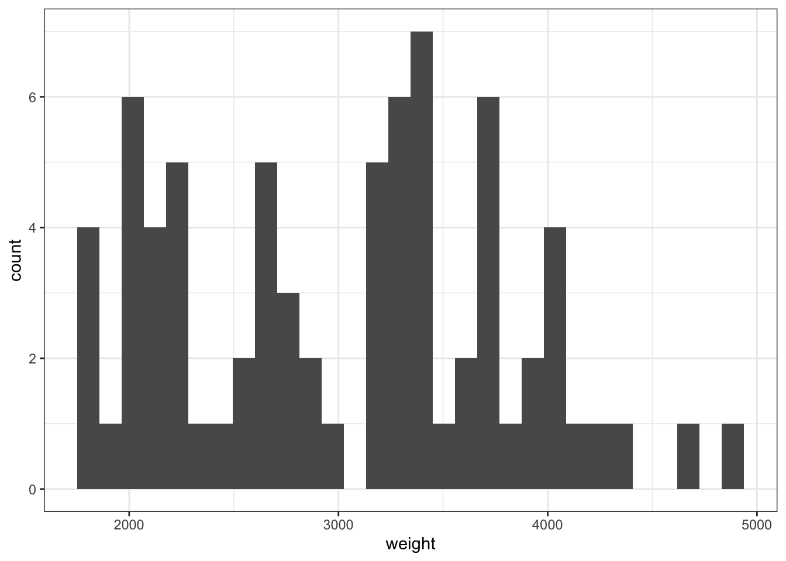
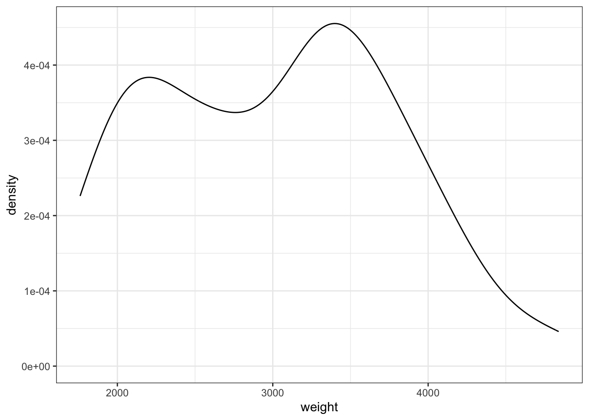
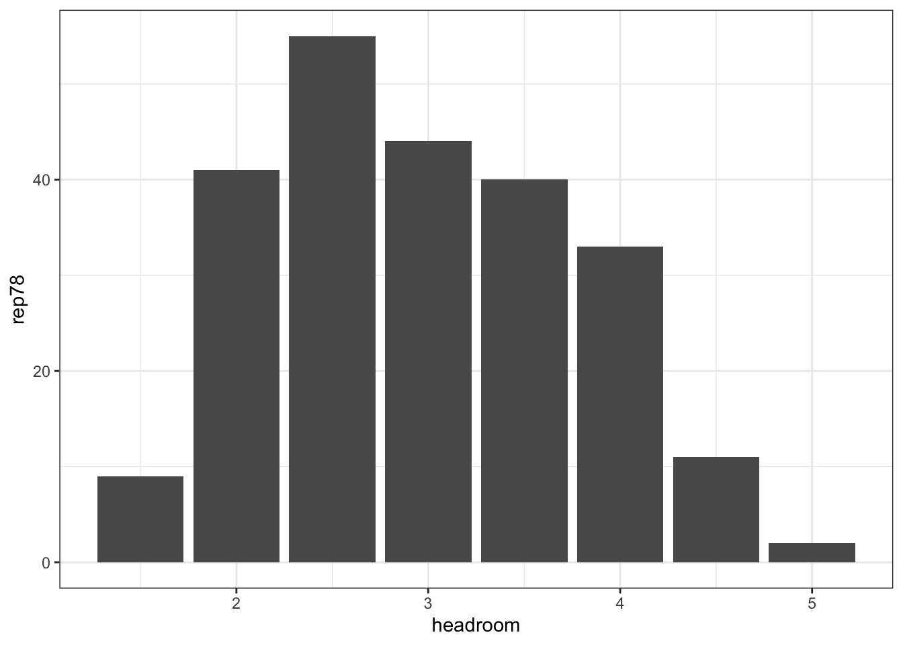
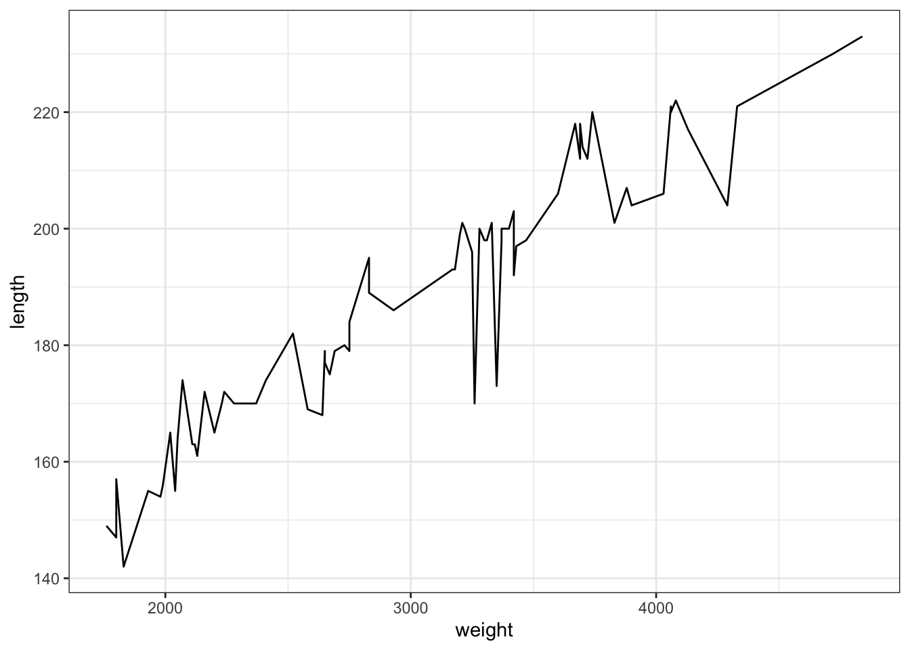
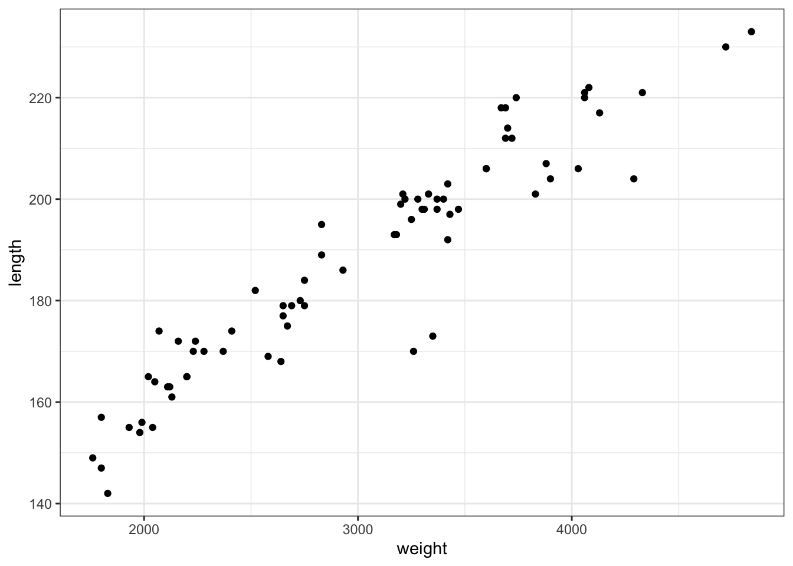
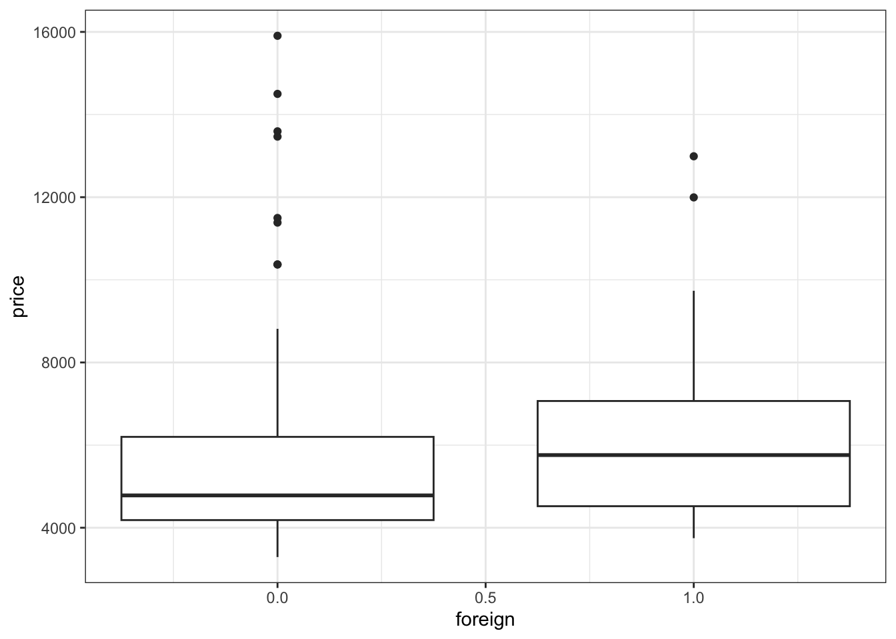
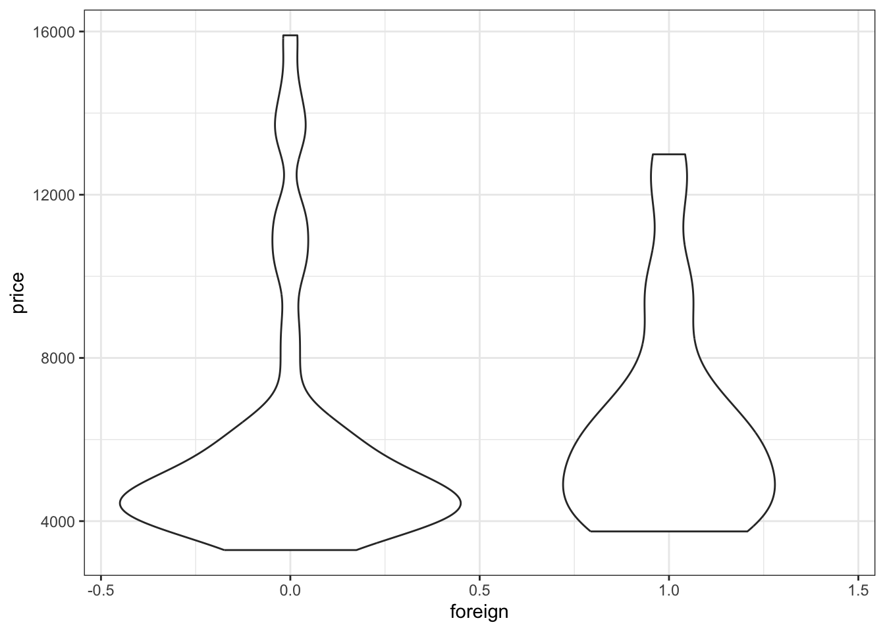
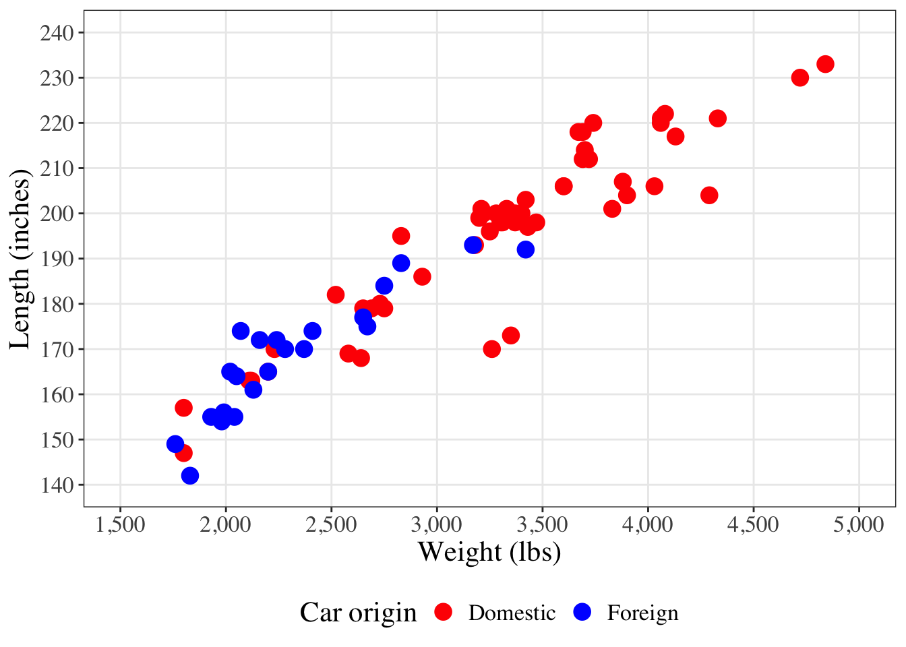

| Function | Stata | R | Note |
|---|---|---|---|
| Making/modifying variables | gen weight_kg = weight/2.205 |
mutate(weight_kg = weight/2.205) |
Making and modifying variables is done using mutate and overwrites variables without warning, unlike Stata |
| Make a string variable numeric | destring price |
mutate(price = as.numeric(price) |
Price is already a numeric variable, you get the idea though. as.numeric is a base R function |
| Make a numeric variable into a string | tostring price |
mutate(price = as.character(price) |
as.character is a base R function |
| Make a variable missing | gen new_var = . |
mutate(new_var = NA) |
Remember that Stata treats missing values as large positive numbers? Yeah R doesn’t do that |
| Create a variable using conditions | gen price_10k = 0 then replace price_10k = 1 if price >=10000 |
mutate(price_10k = case_when(price >= 10000 ~ 1, .default = 0)) |
case_when() can be used for many of the functions in egen too |
Stata to R code translations
code
R
Stata
research
Making the transition from Stata to R can be challenging as the two languages are different in some fundamental ways. My initial training in biostatistics was using Stata, however I made a concerted effort to learn R by doing my entire PhD using the language. There are some things that I still struggle with in R that I found a lot easier in Stata, but that’s ok - we’re all still learning!
This post acts as a reference to provide Stata and R code side-by-side to help people switching between the two languages. There’s a few things to note before diving in:
- All examples are based on the
autodataset from Stata.- In Stata this is accessed using
sysuse auto. - In R this is accessed by reading the Stata dataset using
auto <- haven::read_dta("<path-to-stata-goes-here>/auto.dta").
- In Stata this is accessed using
- I’ve tested these examples using Stata version 15.
- R packages are stated where relevant, however
tidyverseis generally used over base R. - The ChatGPT Stata to R Code Translator provided some assistance.
Workflow differences
I’ll briefly outline some important things to know when switching from Stata to R, because while R can do everything Stata can do, it goes about it differently.
Packages
I mentioned packages already, they’re the reason that R is such a powerful tool. Packages can be thought of as a collection of functions, typically centered around a particular theme or method. Base R is refers to the functions included by default when you install R on your machine. The main thing to know with R packages if you can imagine a function someone’s probably already written a package for it.
I personally find that base R code can be quite arcane to read, which is why I’m such a tidyverse fan. The tidyverse is a collection of packages that is incredibly popular and for good reason, the design of the packages share consistent philophy around how code should be written (see their website if you want to learn more).
To install R packages just run install.packages("<package name>"). To use the package, run library(<package name>) to load in all the functions from that package into your current R session.
You can also use specific functions from packages by loading them in specifically (using include.only) or by explicitly calling the function without loading the package (using ::), demonstrated in the example below.
library(haven, include.only = "read_dta")
auto <- read_dta("/Applications/Stata/auto.dta")auto <- haven::read_dta("/Applications/Stata/auto.dta")Multiple datasets
Stata can sort of do this but nothing like how R does. Instead of using frame to create and manage multiple in-memory datasets and frame change to switch between datasets, you can just load multiple datasets into R, assign them names, and simply call these names when going about your work, no explicit switching required. I won’t go into detail here as you’ll very quickly figure this out as you start to use R, but I think it’s one of the greatest advantages of R over Stata.
Pipes
Using the auto dataset as an example, say we wanted to create a dataset of only domestic cars and analyse their weight to length ratio by brand. In Stata, your each line of your code would be executed sequentially and independently with the results window returning something after each step:
sysuse auto
drop if foreign == 1
gen wgt_len_ratio = weight/length
gen brand = substr(make, 1, ustrpos(make, " ")-1)
sort brand
by brand: summarize wgt_len_ratioYou can write R code in this fashion too but there’s something nice about using pipes. You can think of pipes as literal pipes, you put something in at one end of the pipe and something comes out the other end. In our case, data goes in one end, your code is what happens inside of the pipe, and the result of your code is what comes out the other end. In R there’s two different pipes, the base pipe |> and the magrittr pipe %>%. You probably don’t need to worry about the difference, but for those interested see this post on the tidyverse website.
The same operation as above in R could be done as:
auto <- haven::read_dta("/Applications/Stata/auto.dta")
auto |>
filter(foreign == 0) |>
mutate(
wgt_len_ratio = weight/length,
brand = str_extract(make, "\\w+")
) |>
group_by(brand) |>
summarise(
n = n(),
mean = mean(wgt_len_ratio),
sd = sd(wgt_len_ratio),
min = min(wgt_len_ratio),
max = max(wgt_len_ratio)
)It’s a little longer in length than the Stata example, however I find pipes and tidyverse in particular make the code more readable and easier to follow and navigate (the indentations also help). By running the whole
Assigning output
One of the main things to adjust to in R is the need to assign your output. In Stata, if you were to create a new variable, you would just write gen new_var = old_var*2 and it would automatically create new_var in the current dataset. Similarly, if you run a regression model, Stata stores a bunch of information in the background that you can access, such as via the lincom and margins functions.
In R, the default is to display the output of your code in the console (similar to Stata’s results window). So if you were to run auto |> mutate(new_var = 1) it would just print the result in the console. Instead, you need to assign the output using the assignment operator <- to an object, either an existing or a new one. For example:
auto <- auto |> mutate(new_var = 1)writes over the object namedauto, which is our datasetauto_new <- auto |> mutate(new_var = 1)creates a new object calledauto_newand leaves the originalautoobject unchanged
One aspect of this feature is that it completely circumvents the need for Stata’s preserve and restore. Just assign the output of your code to a new object where you would instead have used preserve and restore. This makes it handy for analyses of data at different stages of cleaning or analysis.
Further resources
The books I would recommend using to keep learning from are:
- R for Data Science
- Advanced R
- ggplot2: Elegant Graphics for Data Analysis
- Fundamentals of Data Visualization
Note that Fundamentals of Data Visualization doesn’t include the R code by default. Instead, Claus provides a link on the welcome page to the book’s GitHub repo, which you can search through to find the code to replicate the graphs in the book.
Converting Stata to R code
Modifying variables
A lot of data cleaning work involves modifying or creating variables in some way. In the tidyverse, variables are typically created or modified using the mutate() function.
Other basics
These functions are more about performing other operations to datasets than changing or modifying variables.
| Function | Stata | R | Note |
|---|---|---|---|
| Renaming variables | rename weight weight_lbs |
rename(weight_lbs weight) |
The arguments are back to front in R. Stata is dplyr is |
| Dropping variables | drop mpg |
select(-mpg) |
The minus is what drops the variable. Without the minus it would instead keep only mpg |
| Dropping observations | drop if foreign == 1 |
filter(foreign != 1) |
Filter keeps observations that meet criteria, rather than drops them, hence the inverse condition |
| Reshaping wider | reshape wide mpg, i(make) j(turn) |
pivot_wider(names_from = ‘turn’, values_from = ‘mpg’) |
|
| Reshaping longer | reshape long rep, i(make) j(newvar) |
pivot_longer(c(rep78,rep79), values_to = ‘newvar’) |
To run these examples, you’d first need to create rep79, which I created as rep78+1 |
| Summarising data | summarize mpg |
summarise(obs = n(mpg), mean = mean(mpg), stddev = sd(mpg), min = min(mpg), max = max(mpg) |
dplyr treats summarise and summarize as synonyms, so use whichever you prefer. |
| Grouping operations | by foreign: |
group_by(foreign) |
You would use group_by() in the line before the operation that you want to apply the grouping to. Once you no longer need the grouping to be in place, use ungroup(), otherwise all subsequent operations will be grouped |
| Seed setting | set seed 1234 |
set.seed(1234) |
Regression
The correspondences here represent the models that you need to run to generate (usually) the same results, not the code that will produce the same output. If you simply run the R code it will output something minimal, instead you will want to assign the model to an object. For the linear regression example, this would be model <- lm(price ~ mpg, data = auto) followed by using the summary function on that object summary(model).
I say ‘usually’ the same results because for some methods there seems to be some minor difference under the hood that means estimates differ slightly. For example, in the negative binomial example the standard errors for mpg are different at the 4th decimal. Always check your outputs :)
Finally, I only include some basic regression models here. In epidemiology we often need to deal with observations that aren’t independent, such as in longitudinal studies. Methods such as generalised estimating equations (GEEs) and mixed effects models are supported in R. For GEEs, see the gee package (link). For mixed effects models, the lme4 (link) is popular.
| Model | Stata | R | Note |
|---|---|---|---|
| Simple linear regression | reg price mpg |
lm(price ~ mpg, data = auto) |
|
| Logistic regression | logit foreign mpg |
glm(foreign ~ mpg, data = auto, family = "binomial") |
|
| Poisson regression | poisson rep78 mpg |
glm(rep78 ~ mpg, data = auto, family = "poisson") |
|
| Negative binomial regression | nbreg displacement mpg |
MASS::glm.nb(displacement ~ mpg, data = auto) |
Requires the MASS package |
Data visualisation
Another great feature of R is ggplot2, the tidyverse package used to create plots. There are so many ways to customise plots using ggplot2 that I won’t cover them here - check out the documentation if you want to learn more.
Note that some of these plots don’t make any sense, it’s just to demonstrate the code.
Histograms
auto |>
ggplot(aes(x = weight)) +
geom_histogram() +
theme_bw()
Density plots
auto |>
ggplot(aes(x = weight)) +
geom_density() +
theme_bw()
Bar charts
auto |>
ggplot(aes(x = headroom, y = rep78)) +
geom_col() +
theme_bw()
Line charts
auto |>
ggplot(aes(x = weight, y = length)) +
geom_line() +
theme_bw()
Scatter plots
auto |>
ggplot(aes(x = weight, y = length)) +
geom_point() +
theme_bw()
Box plots
auto |>
ggplot(aes(x = foreign, y = price, group = foreign)) +
geom_boxplot() +
theme_bw()
Violin plots
auto |>
ggplot(aes(x = foreign, y = price, group = foreign)) +
geom_violin() +
theme_bw()
Customising data visualisations
The different plots are outlined above but you will probably want to customise them further so they look nice. I already did some theming with theme_bw() but we can do more than that. Note my preference for theme_bw() over theme_minimal() (another popular theme) stems from the fact that theme_bw() has a white background, while theme_minimal() has a transparent background, which causes problems in some circumstances.
To make changes to elements of a plot you add things to it with the + symbol. In the examples above I specify the ggplot2 aesthetics, what kind of plot (the geom_* part), and finish with the theme. These components are connected with the + symbol.
Since ggplot2 is so heavily customisable, I won’t go into too much detail here except to provide code that demonstrates some of the common things you’d want to do to a plot.
auto |>
ggplot(aes(x = weight, y = length, colour = factor(foreign))) +
geom_point(
size = 4, # This changes the size of the dots
) +
scale_x_continuous(
name = "Weight (lbs)", # The axis title
labels = scales::label_comma(), # Adds a comma to the axis, using the scales package
limits = c(1500,5000), # The limits of the axis
breaks = seq(1500,5000,500), # Change main grid lines, which is where labels appear
# seq() specifies we want them to go from 1000 to 6000 in increments of 500
minor_breaks = NULL, # Turn off the smaller grid lines
) +
scale_y_continuous(
name = "Length (inches)",
limits = c(140, 240),
breaks = seq(140,240,10),
minor_breaks = NULL
) +
scale_colour_manual(
name = "Car origin", # Changes the legend name
values = c("red","blue"), # Set the colour of the points
labels = c("Domestic","Foreign") # Change the legend label names
) +
theme_bw() +
theme(
text = element_text(
family = "serif", # Change the font of the plot
size = 16, # Change the text size
),
legend.position = "bottom" # Change where the legend is
) 